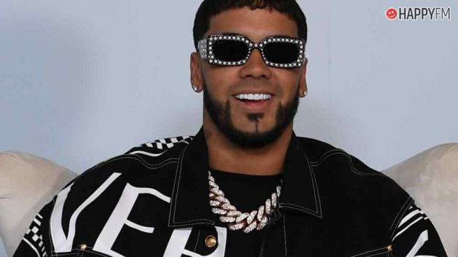

Enmanuel Gazmey Santiago (Carolina, Puerto Rico, 27 de noviembre de 1992), conocido artísticamente como Anuel AA, es un cantante puertorriqueño de reggaetón, rap y trap.
Proveniente de una familia de clase media de Carolina, Puerto Rico.2 Anuel nació el 27 de noviembre de 1992, siendo hijo del músico y empresario José Gazmey, quien fue vicepresidente de Sony Music en Puerto Rico,3 quien es amigo del también cantante Tempo.2 Realizó estudios en el colegio María Auxiliadora en Carolina, y en el transcurso de su formación fue mostrando interés por la música comenzando su carrera en el año 2010 bajo el sello de Maybach Music.
Anuel AA tiene un hijo en común con su ex pareja Astrid Cuevas, llamado Pablo Anuel. Actualmente, comparte una relación con la cantante Karol G.
